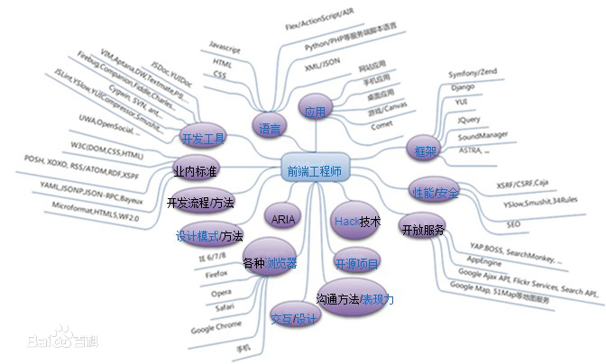

1.前端开发的发展历程
2.前端开发的核心技术
3.前端开发的性能优化
前端技术的发展是互联网自身发展变化的一个缩影。前端技术指通过浏览器到用户端计算机的统称，存贮于服务器端的统称为后端技术。前端开发主要职能就是把网站的界面更好地呈现给用户。
以前会Photoshop和Dreamweaver就可以制作网页，随着网站开发难度加大、开发方式多样，网页制作更接近传统的网站后台开发，网页制作更多被称为Web前端开发。前端技术包括4个部分：前端美工、浏览器兼容、CSS、HTML“传统”技术与Adobe AIR、Google Gears,以及概念性较强的交互式设计，艺术性较强的视觉设计等。在Web1.0时代，由于网速和终端能力的限制，大部分网站只能呈现简单的图文信息，并不能满足用户在界面上的需求，对界面技术的要求也不高。随着硬件的完善、高性能浏览器的出现和宽带的普及，技术可以在用户体验方面实现更多种可能，前端技术领域迸发出旺盛的生命力。2005年以后，互联网进入Web2.0时代，各种类似桌面软件的Web应用大量涌现，前端由此发生了翻天覆地的变化。网页不再只是承载单一的文字和图片，各种富媒体让网页的内容更加生动，网页上软件化的交互形式为用户提供了更好的使用体验，这些都是基于前端技术实现的。随着手机成为人们生活中不可或缺的一部分，成为人们身体的延伸，人们迎来了体验为王的时代。移动端的前端技术开发前景宽阔。此外，前端技术还能应用于智能电视、智能手表甚至人工智能领域。
尽量减少HTTP请求 (Make Fewer HTTP Requests)
减少DNS 查找 (Reduce DNS Lookups)
避免重定向 (Avoid Redirects)
学好Web框架，熟悉掌握HTML、服务器端脚本语言、CSS和JavaScript之后，学习Web框架可以加快Web开发速度，节约时间。PHP程序员可选的框架包括CakePHP、CodeIgniter、Zend等，Python程序员喜欢使用Django和 webpy，Ruby程序员常用RoR。 随着Web 越来越规范和标准的统一，Web组件化技术不断革新，移动端开发不断升华，以下是一些常见开源前端框架： Bootstrap 主流框架之一，Bootstrap 是基于 HTML、CSS、JavaScript的，它简洁灵活，使得 Web 开发更加快捷。 html5-boilerplate 该框架可以快速构建健壮，且适应力强的web app或网站。 Meteor Meteor是新一代的开发即时web应用的开源框架，它能在较短时间内完成开发。 Semantic UI 基于自然语言有效原则的UI组件框架 Foundation 优秀的响应式前端框架 Materialize 基于材料设计的现代化响应式前端框架。可提供默认的样式，自定义组件。此外，Materialize还改进动画和过渡，为开发人员提供流畅的体验。 Pure 几乎可以在每一个web项目中使用的一组小的和响应式的CSS模块。 Vue Vue.js 是用于构建交互式的 Web 界面的库。它提供了 MVVM 数据绑定和一个可组合的组件系统，具有简单、灵活的 API。 Skeleton Skeleton 是一个小的 JS 和 CSS 文件的集合,可快速开发漂亮的网站,适合各种屏幕设备包括手机。Skeleton 基于 960 grid 开发。它是一个 UI 框架。 Amaze UI 国内首个开源HTML5跨屏前端框架产品系列，中文排版支持更优、本土化组件丰富。该产品系列中有专门针对移动端的HTML5混合应用开发框架Amaze UI Touch以及针对跨屏HTML5网页开发的Amaze UI Web。其中，Amaze UI Touch可以帮助开发者通过丰富的组件，快速构建出与原生APP相媲美的专属移动端的HTML5应用。 UIkit 一个轻量级的和模块化的前端框架,用于快速开发和功能强大的web接口。 Yui Yahoo! UI Library (YUI) 是一个开放源代码的 JavaScript 函数库，为了能建立一个高互动的网页，它采用了AJAX, DHTML 和 DOM 等程式码技术。它也包含了许多 CSS 资源。使用授权为 BSD许可证。 kissy 一款跨终端、模块化、高性能、使用简单的 JavaScript 框架。 MUI 最接近原生App体验的前端框架的框架。 Arale 一个开放、简单、易用的前端基础类库。 JX JX 是模块化的非侵入式Web前端框架，特别适合构建和组织大规模、工业级的Web App。 GMU GMU是基于zepto的mobile UI组件库，提供webapp、pad端简单易用的UI组件! Web App。 ZUI 开源HTML5前端框架 Clouda Touch.js Touch.js是移动设备上的手势识别与事件库,也是在百度内部广泛使用的开发。
更多内容可以百度一下